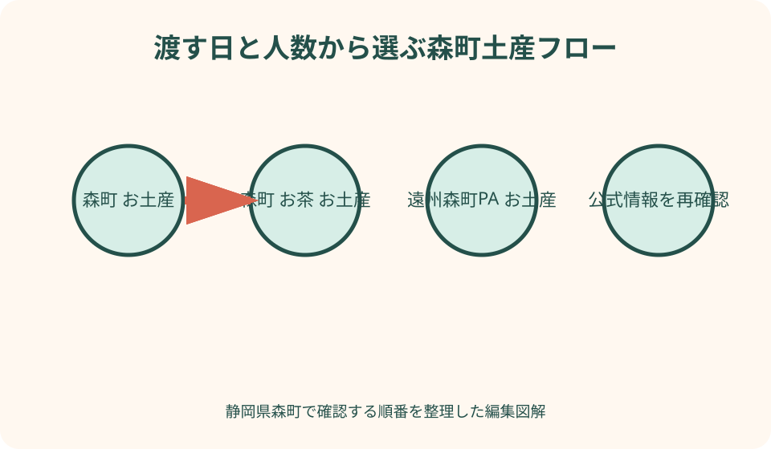
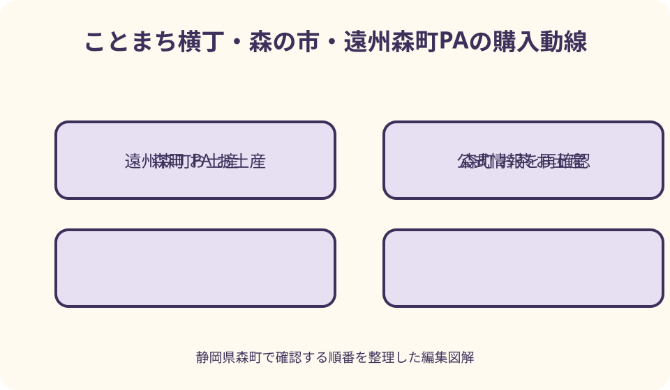

買い物・特産品｜最終確認 2026-08-10
静岡県森町のお土産選び｜お茶・和菓子・農産物を持ち帰り条件で比べる
森町のお土産は、長距離なら常温で分けやすい茶葉・ティーバッグ・個包装菓子、当日渡せる相手には販売者が持ち帰り条件を示す生菓子、季節と保冷を確保できるなら農産物という順で選びます。先に贈る人数と帰宅までの時間を決め、商品ごとの賞味期限・保存温度・原材料を店頭で確認してください。価格、営業時間、在庫は変わるため本記事では固定せず、第一候補が売り切れたら同じ保存条件の商品へ替えます。

編集イラスト最初に決める——品名ではなく、渡す日と人数から逆算する
森町の観光協会は、お茶、和菓子、次郎柿、とうもろこし、メロン、レタス、しいたけ、米、自然薯など幅広い特産を紹介しています。全部を候補にすると売場で迷うため、最初に誰へ、何人へ、いつ渡すか、帰宅まで何時間かを書き、その条件に合わない品を外します。
職場へ配るなら個包装数と常温条件、家族へ渡すなら一つを分けられるか、遠方発送なら包装と配送可否を優先します。自宅用は量と淹れ方、贈答用は表示と箱の扱いが重要です。同じ茶や菓子でも、受け取る人の生活で適した形が変わります。
予算は一人あたりの単価だけでなく、自宅用、個人への贈答、職場配布、保冷・送料の四枠に分けます。店頭で税込価格を確認し、袋、箱、のし、発送を含む合計を計算します。過去の価格記事をもとに現金をぴったり用意しません。
旅行の最初に買う品と最後に買う品も分けます。常温の茶や乾いた菓子は早めに候補を確保できても、生菓子、冷蔵品、傷みやすい農産物は帰路近くに買います。売り切れが心配な品は取り置き可否を販売者へ相談し、車内放置で在庫確保を優先しません。
常温と要冷蔵を分ける——表示を読むまで保存条件を決めない
茶葉、ティーバッグ、羊羹、せんべいなどは常温土産の候補になりやすいものの、すべての商品が同じ保存条件ではありません。直射日光、高温多湿を避ける必要や、開封後の扱いがあります。包装の表示と販売者の説明を確認し、真夏の車内を常温とみなしません。
わらび餅、クリームを使う菓子、カット果実、惣菜等は、商品ごとに冷蔵、当日中、短時間の持ち歩きなど条件が異なります。見た目や他店の同名商品から推測せず、購入時に保存温度、消費期限、保冷剤の目安、発送できるかを尋ねます。
保冷バッグを持っていても、冷蔵品を一日持てる保証にはなりません。保冷剤の量、外気温、開閉回数、移動時間で状態が変わります。販売者が示す時間を超えるなら、その場で食べる、冷蔵配送へ切り替える、常温商品を選ぶという順で判断します。
茶葉は冷蔵品と同じ袋へ入れず、結露、湿気、強いにおいから離します。農産物も冷やせばよいとは限らないため、品目別に適した扱いを聞きます。持ち帰り袋を「冷やす物」「乾いた物」「潰れやすい物」の三つに分けると整理できます。
森の茶を選ぶ——急須、ティーバッグ、少量包装を使う場面で比べる
森町観光協会は遠州森町を茶の産地として紹介し、ことまち横丁の森の茶本舗は深蒸し茶、ティーバッグ、少量包装、茶器、茶菓子を掲載しています。銘柄の順位を付けるより、贈る相手が急須を持つか、職場で湯を使うか、開封後に飲み切れるかで形を選びます。
急須を日常的に使う相手には茶葉、後片付けを簡単にしたい相手にはティーバッグ、好みが分からない相手には複数の少量包装が候補です。粉末、抹茶、ほうじ茶などは淹れ方が異なるため、名称だけで同じ用途と考えず、必要な湯温や道具を販売者へ聞きます。
贈答では収穫年、産地、内容量、賞味期限、保存方法を表示で確認します。「森町にある店で買った」と「森町産茶葉」は同じ意味ではありません。産地を伝えたい場合は包装の記載を読み、店員へ確認できないことを物語として補いません。
大量に買う前に、贈る人数を袋数へ換算し、自宅で保管する期間を考えます。茶は軽くてもかさばり、香り移りや湿気を避ける場所が必要です。発送を使うなら、箱、送料、到着日、夏季の保管を確認し、帰宅後に配る分だけを手荷物にします。

和菓子を選ぶ——個包装、切り分け、季節限定を別々に考える
観光協会は森町に茶菓子と相性のよい和菓子店や老舗が多いと案内し、次郎柿羊羹などを紹介しています。羊羹、最中、餅菓子、栗の季節菓子は、同じ和菓子でも期限と配り方が違います。職場なら個包装、家庭なら切り分け、当日会う相手なら短い期限も候補にします。
次郎柿を使う羊羹は森町らしさを説明しやすい候補ですが、常に全店で買えるとは限りません。店ごとの製法、原材料、箱数、営業日を確認します。観光協会が紹介する季節限定の栗菓子などは、販売期間内でも早く品切れになる場合があるため予約可否を聞きます。
賞味期限は製造日からの日数ではなく、自分が購入する商品の表示日を見ます。渡す日まで何日残るかを数え、相手に期限を口頭でも伝えます。開封後の期限、切り分け後の保存、冷蔵が必要かも同じ商品ごとに確認します。
味の濃さ、食感、甘さを未経験のまま断定しません。贈る相手へ説明するときは、原材料、森町の茶との組み合わせ、次郎柿の地域性など公式に確認できる内容に留めます。好みが不明なら一箱を大きくするより、小さな異なる品を組み合わせます。
農産物を選ぶ——旬、傷み、重さ、渡す日の四条件を見る
観光協会は、とうもろこしが旬の時期に午前中で完売する直売所もあると案内しています。次郎柿、メロン、レタス、しいたけ、米、自然薯なども収穫期が異なります。旅行日と旬が合わなければ加工品へ替え、年間を通して同じ農産物が並ぶと考えません。
生鮮品は、購入時の状態、持ち歩き、車内温度、渡す日で品質が変わります。販売者へ選び方、保存、食べ頃、傷みの見分け方を聞き、贈る相手へ伝えます。重い品や潰れやすい品は公共交通と相性が悪いため、発送または少量購入を選びます。
とうもろこし等の人気品を目当てに早朝から向かう場合、直売所の駐車、近隣住宅、並び方のルールを守ります。売り切れたら別の無人販売へ闇雲に回らず、JA森の市や観光案内へ当日の入荷を確認します。路上駐車や畑への立入をしません。
農産物を職場で配る場合は、一人分に分けにくい、冷蔵庫容量を使う、調理が必要という負担も考えます。相手の予定が分からなければ、茶や加工菓子を選ぶ方が渡しやすい場合があります。旬の品は自宅用または事前に了承を得た相手へ絞ります。
ことまち横丁で買う——参拝後に乾いた土産から選ぶ
ことまち横丁では、森の茶本舗の深蒸し茶、ティーバッグ、茶を使った菓子、茶器、お茶の詰め放題などが公式に紹介されています。小國神社参拝と組み合わせやすい一方、営業時間、実演、商品在庫は当日確認し、参拝前に温度変化しやすい品を抱えません。
お茶の詰め放題は遠州産の深蒸し煎茶、くき茶、ティーバッグの実演として掲載され、保存袋や密封品の案内もあります。詰める量だけで選ばず、開封後に飲み切れるか、贈答に未開封包装が必要かを考え、実演品と工場密封品を比較します。
茶菓子を選ぶ際は、茶の粉末、抹茶、ほうじ茶、乳・小麦・ナッツ等の原材料を表示で確認します。製造場所と販売場所を混同せず、森町産と説明したい原料がどれかを尋ねます。箱だけで産地を推測しません。
買い物は参拝後、帰路近くにまとめると手荷物を減らせます。混雑時は第一候補を一つ決め、列が長ければ森の茶本舗の包装品、町内茶店、PAへ切り替えます。横丁で全種類を買うことを目標にしません。

JA森の市と直売所——遠州森駅から歩く人の現実的な候補
JA遠州中央の森の市公式は、天竜浜名湖鉄道の遠州森駅から西へ約200メートルと案内しています。駅構内で土産一式を買えるという公式確認はできなかったため、車なしの人は森の市を候補にし、営業日、営業時間、帰りの列車までの余裕を事前に確認します。
森の市は茶、米、次郎柿、とうもろこし等を旬に扱う直売所として紹介されています。入荷は日ごとに変わるため、欲しい品がある日は電話で当日の状況を聞きます。駅に近くても重い米や農産物を持って乗車できるか、袋と荷物量を考えます。
冷蔵品を買う場合は、駅での待ち時間と乗換を持ち歩き時間へ加えます。保冷剤を購入できるとは限らず、自宅から小さな保冷バッグを持参します。帰路が長い人は、常温の茶、加工品、少量の農産物へ絞ります。
列車の出発直前に初めて店へ向かうと、会計や商品選びで乗り遅れます。到着時に場所と営業を確認し、町歩きの最後に戻る時刻を決めます。売り切れた場合は駅で代替品を探し続けず、発送やオンラインの正規窓口を検討します。
遠州森町PAで買う——上り下りと一般道利用を先に確かめる
NEXCO中日本は遠州森町PA下りの森の楽市茶屋で、森町を代表する茶や次郎柿など地域の特産物、各種土産を扱うと案内しています。PAは帰路に寄りやすい候補ですが、上りと下りで店舗、商品、営業時間が同じとは限りません。利用する進行方向の公式店舗情報を確認します。
町なかで買えなかった品をPAで必ず補えるとは考えません。売場には森町以外の静岡・遠州土産も並ぶため、森町産や森町の事業者の商品を選びたい場合は、製造者、販売者、原材料産地の表示を読みます。PA名だけを産地表示の代わりにしません。
高速道路へ乗らない人が一般道側から利用できるか、駐車場所、利用時間はPA公式で確認します。逆方向へ入るための危険な経路変更をせず、旅程と合わなければ町内の直売所や店舗を使います。PAを最後の一択にしないことが重要です。
夜に寄る場合、土産コーナーとコンビニの営業時間が異なる可能性があります。2026年の工事や短縮営業も公式告知で確かめ、閉店間際に包装や大量在庫を求めません。贈答品は町内で早めに確保し、PAは不足分や自宅用の補助にします。
予算と人数——三つの箱に分けて買い過ぎを防ぐ
予算は「一人へ渡す箱」「職場で配る個包装」「自宅用」の三つに分けます。一つの大箱が安く見えても、個数が足りない、開封後に配りにくい、相手へ負担になる場合があります。内容量と包装単位を数え、必要数に予備一つを加えます。
職場用は個包装数、原材料表示、賞味期限、箱の持ちやすさを優先します。割れやすい菓子を満員列車で運ぶ場合は包装を相談し、紙袋だけに頼りません。茶のティーバッグも一包ずつ原材料や淹れ方が分かるかを確認します。
贈答用は、のし、手提げ、配送伝票、到着日、領収書を先に相談します。冷蔵便と常温便を同梱できるとは限らず、複数住所では送料が増えます。商品代だけで上限を使い切らず、包装・送料枠を残します。
自宅用は見栄えより飲み切り、食べ切りを基準にします。詰め放題や農産物の箱買いは量の魅力があっても、開封後の保存場所と消費日数を考えます。余る量を買って配る相手を後から探すより、小さく買って次回別品を選びます。
賞味期限を読む——製造日ではなく渡す日から残日数を見る
賞味期限と消費期限は意味が異なるため、表示をそのまま確認します。購入日から何日ではなく、渡す予定日の時点で何日残るかを数えます。相手がすぐ開封できない場合を考え、短い期限の品は事前に了承を得ます。
個包装の外箱と内袋で表示場所が異なることがあります。箱を捨てて小分けすると期限や原材料が相手へ伝わらない場合があるため、配布方法を店員へ相談します。職場では未表示のままばらして机へ置きません。
農産物には加工品と同じ期限表示がない場合があります。食べ頃、保存温度、追熟、傷みの兆候を販売者へ聞き、メモを添えます。次郎柿、とうもろこし、メロンを同じ方法で保存すると決めつけません。
開封後は期限表示より早く状態が変わる品があります。茶葉は湿気と香り、羊羹は切り口、生菓子は温度に注意します。贈る際に「開封後は表示に従って早めに」と伝え、記事の一般論で具体日数を上書きしません。
贈答とアレルギー——地域らしさより、相手が安全に扱えるか
贈答品では、相手のアレルギー、年齢、嚥下、カフェイン、アルコール、調理環境を確認します。茶菓子には乳、小麦、卵、ナッツ等が含まれる可能性があり、菓子名や色から判断できません。表示を読み、不明なら製造者へ確認します。
次郎柿ワインなど酒類を候補にする場合は、相手が飲酒するか、年齢、受取時間、配送規則を確認します。森町らしいという理由だけで酒を贈らず、茶、羊羹、工芸品など別分野の候補を持ちます。
高齢者へ固い菓子、大人数家庭へ期限の短い小品、急須のない相手へ大袋茶葉を贈ると、地域性があっても扱いに困ります。相手が使う場面を一文で説明できる品を選び、判断できなければ少量のティーバッグや個包装へ寄せます。
のしや包装へ名前を入れる場合、用途と表書きを販売店へ相談します。観光土産の簡易包装と正式な贈答箱は在庫が異なる可能性があります。必要数が多いときは訪問日より前に予約し、当日の店頭在庫をすべて買い占める形を避けます。
ふるさと納税と通販——現地土産の代わりに見えて仕組みは別
森町公式は、ふるさと納税の申込方法と正規ポータルを案内し、返礼品を無断掲載する悪質サイトへ注意を促しています。現地で商品を購入することと、自治体へ寄附して返礼品を受け取ることは別の仕組みです。価格比較のように扱いません。
旅行後に同じ品を取り寄せたい場合は、販売者公式通販または町公式が案内する正規窓口を使います。検索広告だけで判断せず、ドメイン、事業者名、連絡先、決済先を確認します。ふるさと納税は寄附額、控除手続、配送時期を町公式で確かめます。
生鮮品や季節品は発送時期を選べない場合があり、贈答日に必ず届くとは限りません。返礼品の説明、発送目安、不在時の扱いを読みます。現地で売り切れたからと、非公式サイトで急いで注文しません。
車なしで重い米や農産物を持てない人には正規配送が現実的ですが、店頭購入品の発送とふるさと納税を混同しません。送料を払う通常発送、オンライン購入、寄附返礼品の三つを分け、受取人と目的に合う方法を選びます。
売り切れ・休業時の代案——同じ品ではなく同じ条件へ替える
第一候補が売り切れたら、同じ商品を町内で探し回る前に、必要条件を確認します。常温、十人へ配れる、森町を説明できるという条件なら、羊羹からティーバッグ、農産物から茶菓子へ替えても目的は残ります。
直売所のとうもろこしが完売した日は、旬の別野菜、農産加工品、茶へ切り替えます。季節外に無理に生鮮品を探さず、次郎柿羊羹や茶など加工・保存された地域素材を選びます。ただし商品ごとの産地表示を確認します。
ことまち横丁が混雑・休業なら、町内茶店、JA森の市、帰路の遠州森町PAを順に検討します。車なしなら遠州森駅から徒歩圏の森の市を営業中に訪れ、閉店後は無理にPAへ向かわず正規通販へ回します。
贈答箱が足りない場合、自宅用包装を正式な贈答へ見せかけず、後日発送を相談します。旅行当日に全部そろえることを成功条件にせず、現地で一品を選び、残りは製造者から適切な状態で送る方法も代案です。
良い点——茶、菓子、農産物から相手の暮らしに合わせられる
森町土産の良い点は、軽く長く持ちやすい茶、配りやすい菓子、旬を直接感じる農産物という異なる選択肢があることです。全員へ同じ品を買わず、職場には個包装、家族には茶、自宅には旬の野菜と役割を分けられます。
観光協会が紹介する茶と和菓子の組み合わせは、別々の店で選んでも一つの贈り物にできます。茶の淹れ方と菓子の期限を添えれば、森町の産業を一箱で説明できます。味を誇張せず、産地・原材料・店の公式説明を伝えます。
次郎柿やとうもろこしのように季節が明確な品は、訪問時期を記憶へ結び付けます。買えない時期があることも地域の特徴です。季節外には加工品を選び、次回は収穫期に訪れる理由として残せます。
町なか、神社隣接の横丁、駅周辺の直売所、高速道路PAと購入場所が複数ある点も旅程を組みやすくします。ただし同じ商品構成ではないため、場所ごとの役割を決め、在庫確認をしてから移動することで良さが生きます。
注文したい点——保存温度と期限で横断検索できる公式一覧
利用者として注文したい点は、森町の土産を茶、菓子、農産物だけでなく、常温、要冷蔵、当日中、発送可、個包装で絞れる公式一覧です。商品写真より先に持ち帰り条件が分かれば、公共交通や遠距離の人が安全に候補を選べます。
各店舗には、営業日、最終入店、売り切れ傾向、予約・取り置き、決済、駐車、駅からの徒歩を更新日付きで載せてほしいところです。旬の農産物は入荷カレンダーと当日情報を分け、昨年の販売実績を今年の在庫と誤解しない表示が必要です。
PA、駅、町内店の販売場所も、進行方向と交通手段で検索できると便利です。遠州森駅には駅構内売店を期待させず、徒歩約200メートルの森の市など実際の候補へ案内し、PAは上り下り別の公式店舗情報へつなぐ形が望まれます。
アレルゲンは商品ごとの最新包装が最終情報であることを明記しつつ、問い合わせ先を一覧に載せてほしいところです。贈答箱、のし、発送、冷蔵便の可否も揃えば、旅行者が店頭で長く迷わず、販売者の対応負担も減らせます。
対案・結論——常温一つ、季節一つ、自宅用一つまでに絞る
初訪問の基本は、配る常温品を一種類、家族へ季節品を一種類、自宅用の茶を一種類までに絞ることです。贈る日、人数、帰宅時間を書き、賞味期限、温度、原材料、包装を当日の商品で確認します。
茶は急須かティーバッグ、菓子は個包装か切り分け、農産物は旬と重さで選びます。ことまち横丁、JA森の市、町内菓子店、PAを旅程に合わせ、営業時間と在庫を確認します。駅構内やPAの両方向で同じ品が買えるとは考えません。
売り切れたら、同じ保存条件と人数条件の商品へ替えます。要冷蔵品を無理に常温で運ばず、農産物がなければ加工品、贈答箱がなければ後日正規発送へ移ります。ふるさと納税は通常購入と別の仕組みとして町公式から利用します。
価格や味の評価を固定せず、相手が安全に受け取り、期限内に使えることを成功基準にします。森町らしさは大量購入ではなく、茶、和菓子、農のどの背景を選んだかを一言添えることで伝わります。
大石の視点——土産袋に『誰へ・いつ』の付箋を貼る
私なら買った直後に、袋へ「職場・月曜」「家族・今夜」「自宅・開封後密閉」と付箋を貼ります。車へ積んだ後に誰の品か分からなくなるのを防ぎ、冷蔵品だけを帰宅直後に取り出せます。贈答用を途中で開ける誤りも減ります。
写真は商品正面だけでなく、許可される範囲で期限、保存、原材料、製造者を撮ります。帰宅後に味の記憶を作らず、公式表示と自分が選んだ条件を分けて記録します。次回は余った数や持ち歩き時間を見直せます。
森町のお土産を説明するとき、人気順位ではなく選択理由を伝えます。急須を使う人だから茶葉、十人へ配るから個包装、今夜渡せるから季節菓子という理由なら、商品が翌年変わっても選び方は残ります。
最後に確認するのは、買えた数ではなく、冷蔵品が冷えているか、期限が相手へ見えるか、重い農産物を安全に運べるかです。一つを諦めても適切な状態で帰宅できれば、その買い物は森町の作り手を雑に扱わない選択になります。
公式情報・確認先
掲載内容は次の一次情報を基礎に整理しました。営業、料金、催し、交通は変わるため、出発前または手続き前にリンク先で最新情報を確認してください。
- 静岡県森町 観光案内・地図（静岡県森町、2026-08-10確認）
- 静岡県森町 森町ふるさと納税（静岡県森町、2026-08-10確認）
- 静岡県森町 暮らしの森町自慢（静岡県森町、2026-08-10確認）
- 静岡県森町観光協会 特産品・お土産（静岡県森町観光協会、2026-08-10確認）
- 静岡県森町観光協会 JA森の市（静岡県森町観光協会、2026-08-10確認）
- JA遠州中央 森の市（jaenchu.ja-shizuoka.or.jp、2026-08-10確認）
- 森の茶本舗（ことまち横丁、2026-08-10確認）
- ことまち横丁 お茶の詰め放題（ことまち横丁、2026-08-10確認）
- NEXCO中日本 遠州森町PA下り店舗情報（NEXCO中日本、2026-08-10確認）
- 村登屋（静岡県森町観光協会、2026-08-10確認）